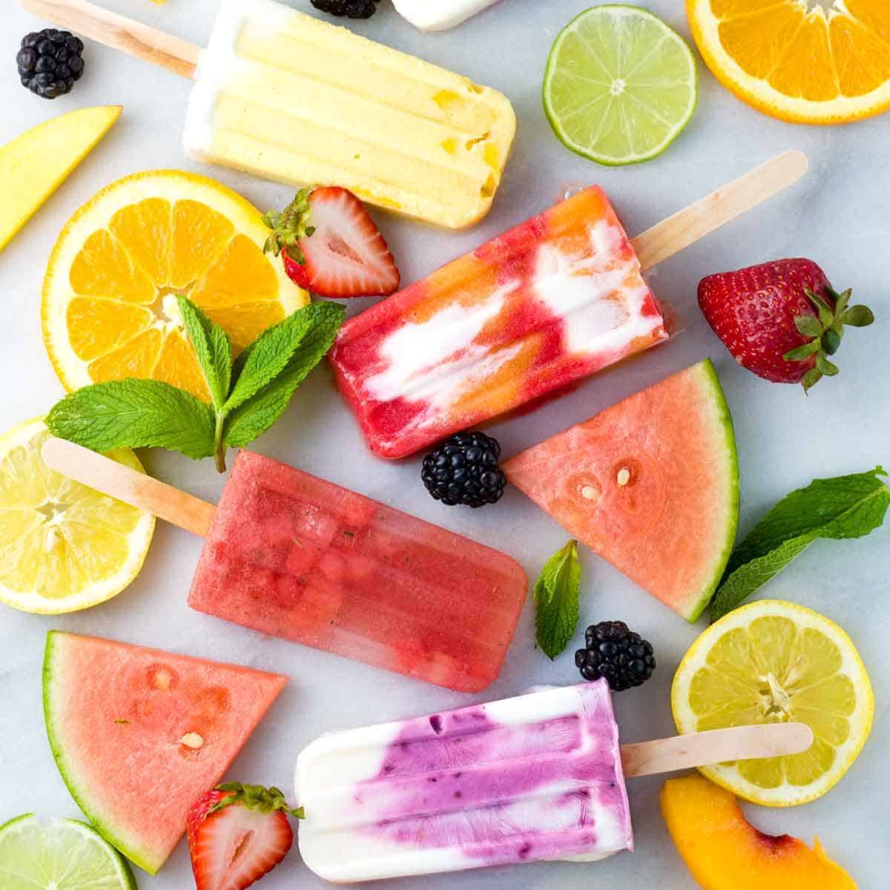

Desserts are absolutely goated, think of a summer morning, and you're munching on some popsicles that is the goated life.
Choose your dessert:
Cookies:

A good choco chip cookie with milk always hits (nvm some of them are cheeks) here is my recipe that I use after filting and combining multiple recipes :) (for 12 cookies):
Equipment:
Oven
Stand mizer/hand mixer (optional)
Baking paper and baking tray
Ingredients:
110g(8 tbsp) of salted butter
100g (1/2 cup) of granulated sugar
45g (1/4 cup) of brown sugar
4g (1 tsp) of vanilla extract
1 egg :)
180 g(1 1/2 cup) all purpose flour
a little whif of baking soda
A little bit of salt to taste
120 grams (3/4 cups) of dark chocolate(cuz dark is clearly better)
Intructions
Preheat yo oven to 190° c (375°f)
In a medium sized bowl, beat the butter with the sugars until it's creamy and incorporated (you can use a stand mixer or hand mixer to speed up the process). Then add the egg and vanilla (don't beat it for too long)
Add the flour, baking soda and salt. Then mix until lil crumbles form and push the crumbles together using your hands. Finally, add those delicous DARK CHOCO chip cookies with your hands as well
Roll the dough into however many cookies you want depending on how big you want them to be. I recommend 12 cookies for this recipe. Then place them on a sheet of baking paper on a tray.
Bake for 10 minutes and DON'T OVERBAKE TS
Let them cool then feast 😋🍪🍪
Fruit flavored popsicles:
Hot take, but I really think popsicles are better than ice cream. Ice cream is way too filling and ngl, popsicle flavours (especialy fruit ones) are much more strong and I don't like the creamy flavor of ice cream. Anyways, here is my recipe for 6 pops:
Equipment:
Blender
Popsicle mold and sticks
Measuring cups or scale
Small bowls
Ingredients:
170g(3/4 cups) of fruit juice/smoothie
500g(2 1/2 cups) of fruit
1 lemon
Intructions:
Cut the lemon in half and squeeze the juice out into a small bowl
Add all ingredients into the blender and blend until smooth( about a minute)
Pour the mixture into 6 popsicle molds then place some popsicle sticks in the middle of it
Secure the lid of the popsicle mold or cover it with foil
Freeze it overnight or around 9 hours in the freezer
Take the popsicles out in the mold and enjoy! 😋🍦🍧📍
Cakes:

Ok, I don't think you were thinking of a cheesecake when you think of cake. But I like cheesecake a whole lot better then any other cake. Normal cakes are a bit too dry for my liking. So here is my cheesecake recipe with the crust:
Equipment:
Mixing bowls
A spoon / spatula
A round pan for the cake
Ingredients:
180g (1 1/2 cups) of cookie or cracker crumbs
200g(1 cup) of granulated sugar
100g (7 tbsp) of unsalted buttter
900g (32 oz) of cream cheese
A lil bit of salt
4 eggs :)
160g (2/3 cups) of sour cream
Intructions:
Preheat your oven to 180°c (350°f)
Mix the cookie/cracker crumbs with 2 tbsp of sugar and stir it well.
Then add the melted unsalted cutter to the cookie crumb mixture and using a fork to combine it well
Pour the crumb mixture to the cheesemake pan and press firmly on the bottom and sides of the pan, set aside.
In a bowl of a stand mizer or hand mixer (you can use a spatula if you don't have either) add the cream cheese and stir until smooth and truly creamy.DON'T OVERBEAT TS
Add the rest of the sugar and stir until creamy
Add the sour cream, vanilla, and salt and stir well until combined
Using a mixer on low speed, add the eggs slowly, one at a time, stirring until each egg is incorporated. Once all the eggs have been adde, use a spatula to scrape the sides and bottom of the bowl.
Pour the cheesecake batter into the cake pan, place the pan on a cookie sheet lined with foil.
Bake for 160°c(325°f) for a hour(a bit more if needed)
remove the bake from the mold and feast😋🧀🍰